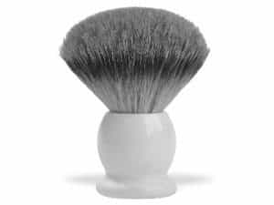

< < < Back
Why You Should Shave With A Single Blade And Brush – Return Of Kings
“Oh god, Larsen’s talking about fashion, this isn’t what I read his columns for!” is what I imagine you’re probably saying after reading that title. Before you go running off to WizardChan or Omega Virgin Revolt or some other website for sexless wonders, let me explain why I am deviating from my usual repertoire:
I am commissioned to write articles about fitness, health, and nutrition. In my not-so humble opinion, personal hygiene is encompassed within those topics-particularly “health”-and is thus worth investing time into. Or in layman’s terms, the biggest muscles and leanest proteins in the world won’t really avail you much in the sexual marketplace if you’re an unclean, foul-smelling troglodyte—and having a movement comprised of schlubby basement dwellers won’t help us create the change we want to see in society, either. We’re supposed to be returning kings, remember?
On a similar note to that last sentence, the name of my own website is “The Barbaric Gentleman,” and both of those nouns are operative terms. In addition to the controlled barbarism I advocate in writing about fitness, martial arts, and channeling your anger into the previous two things, I also advocate genteel skills and interests such as being well read. And now, this article marks the first of what will likely be several future articles on the subject of personal grooming and hygiene, and perhaps fashion as well.
And it is now I arrive at the point of this article: you are likely shaving with a disposable piece of plastic crap and some thin foam that comes out of a can and smells like medical supplies. You oughta to stop doing that, and instead properly treat your skin.
(In speaking of “properly treating your skin,” and indeed in speaking about grooming and fashion as well, I am not saying you ought to be some perfumed ponce fussing over every enlarged pore and ingrown hair. I am speaking in terms of being in good health and not having skin that is dry, cracked, oily, or covered in acne—in short, a middle ground between being completely slovenly and being a dandy.)
The Tools
The first thing you’ll need is a proper razor—I myself use a safety razor that was originally my grandfather’s, but in the event you can’t find an antique, these razor blades are still produced by companies such as Classic Shaving. Many of these companies also produce cutthroat straight razors. Both of these types of single-blade razors will produce a cut that is closer and cleaner than any of the disposable garbage men today typically use, but the one you choose to use will depend on how you weigh convenience versus financial and environmental impact: the safety razor is much easier to use (installing blade cartridges versus having to strop and sharpen the straight razor), but the straight razor produces no waste at all beyond the original packaging, as opposed to the cartridge boxes the safety razor uses-both, however, cost less than the typical razors.
If you do decide to buy the safety razor, I would recommend a brand a step above the pharmacy generics, such as the Wilkinson Swords, as I find that these are sharper and hold an edge longer.
Secondly, you will need a shaving brush-note that these brushes are constructed in a certain way, with a certain density and shape of bristles, so I would advise you to not use the paint brush you used to put a coat on your walls the other day

Shaving brushes are made with either boar or badger hair, in that order of increasing quality and expense. Naturally, I managed to obtain a badger hair brush some time ago, and you shouldn’t have any problems obtaining one either—I purchased mine at a pharmacy, and if you can’t find one there, try a company such as West Coast Shaving
Third, and perhaps most importantly, you will need shaving soap—NOT shaving cream in a can, but a cake or bar of designated shaving soap that is placed in a mug and used with the brush. You will likely not find this in your standard CVS or Walgreens—and frankly, I have had enough of fish-eyed liberal arts majors give me a dull “Huh?” when I ask for shaving soap.
Instead, this can be purchased online. These soaps are made with varying types of lipids and oils, typically vegetable fats (the one in the link, which is what I use, is based in cocoa butter, to cite one example). As a side note, raw hunks of suet or other condensed animal fats can be used as shaving soap if nothing else is available, as referenced in Henry Stanley’s In Darkest Africa. No matter what you’re using, the soap is placed inside a mug. Purists will insist that a specialized shaving mug be used, I don’t think it’s necessary. Just don’t use a plastic cup.
The Technique
So, now that you have the tools for a proper shave, you have to learn how to use them. The first step is to moisten your face with hot water, and I don’t think you need to be told how to do this. Then, soak your brush in the hot water, and fleck off excess moisture into the sink. Using the moistened brush, begin swirling it around on the cake of soap, developing a thick lather. Once the lather has been developed to the desired thickness, begin spreading it on your face in a similar swirling motion. This will cause the hair follicles to stand up straight, and also exfoliate and nourish the skin.
Once the lather has been properly applied, you can begin shaving-using what I can only describe as a feather touch, begin doing up and down strokes on the areas that have hair. The mechanics are not particularly difficult-stretch the skin if you need to, and do multiple passes over the area until it is sufficiently smooth. The reason this technique section is so short? It’s simple—you likely won’t need to do that many passes, and you are also likely to get close and smooth shave.
Finish it off with a rinse of water, and some aftershave (I recommend Pinaud’s as an aftershave that both smells great and is dirt cheap). If you need more information on shaving, I recommend the 1905 book Shaving Made Easy which, much like the aforementioned In Darkest Africa, can be found for free by the good people at Gutenberg.
While the book is not really necessary, proper shaving absolutely is: for taking good care of your hygiene helps you make a better impression on people for all your daily doings. In addition, it instills discipline in you that can help you develop other skills and overcome problems in your life.
Read More:You Should Use Olive Oil To Shave Your Face